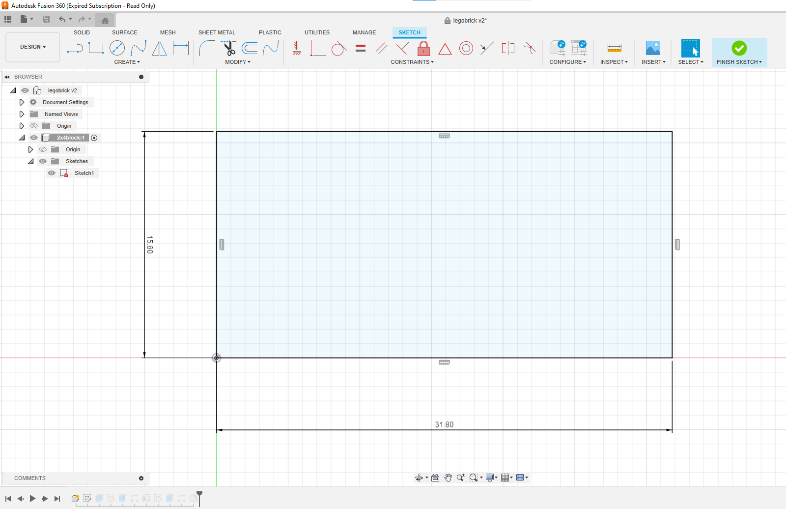
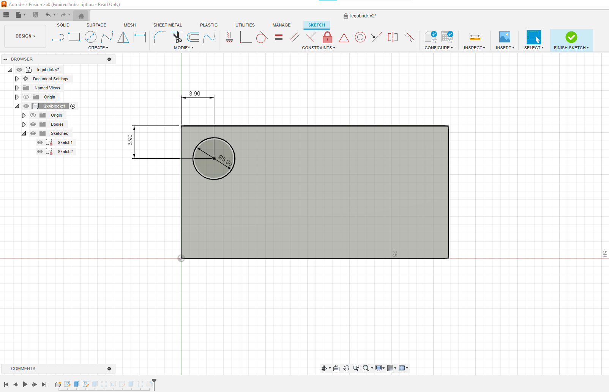
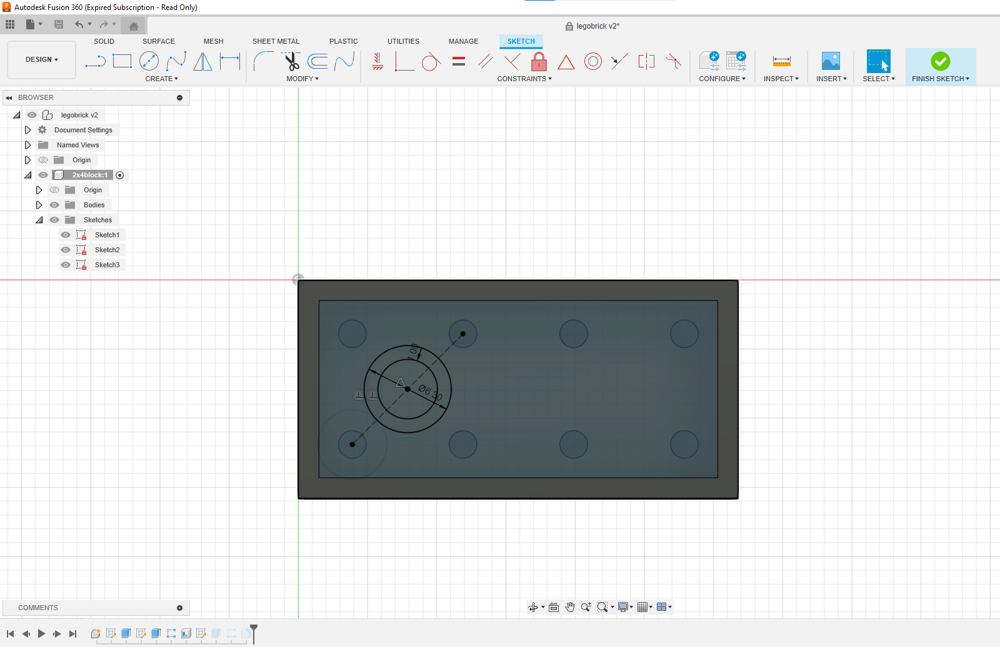
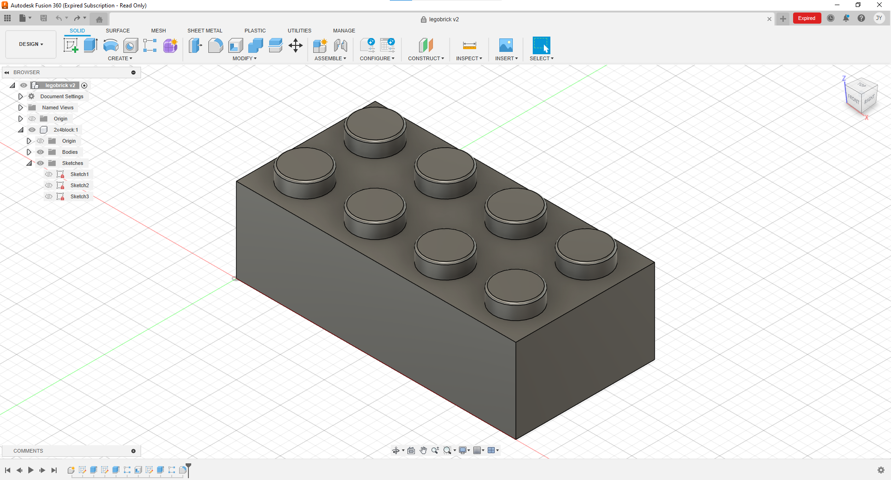
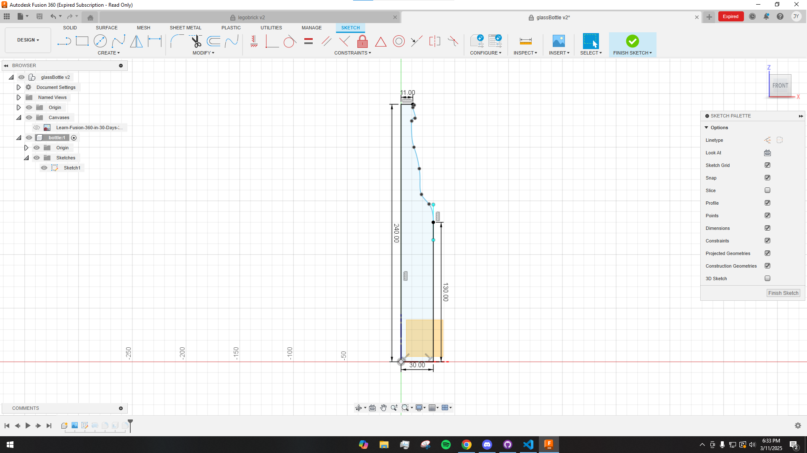
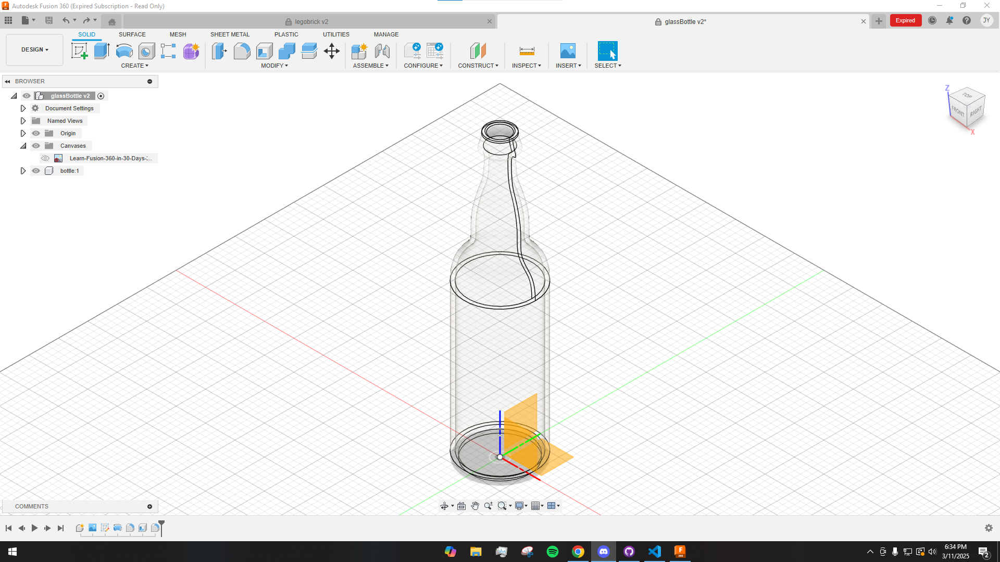
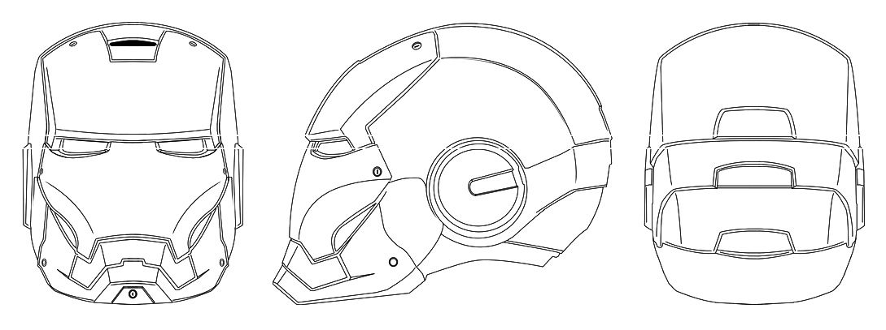
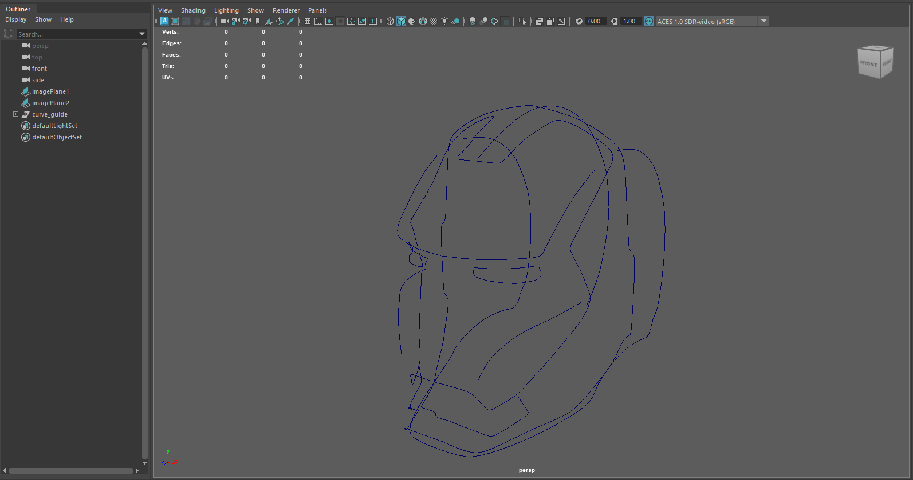
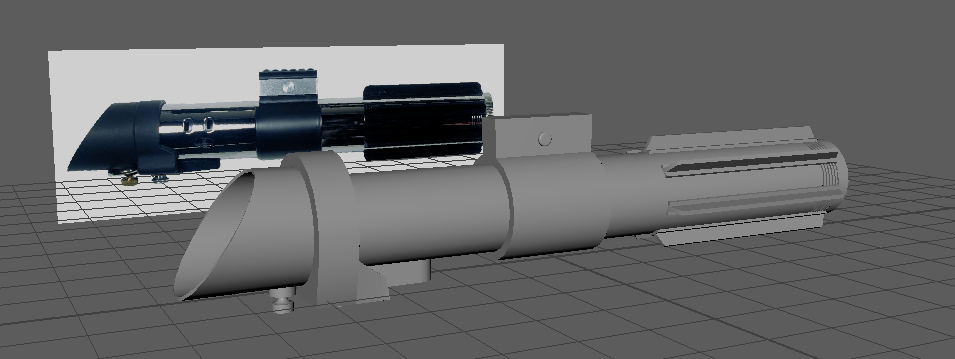
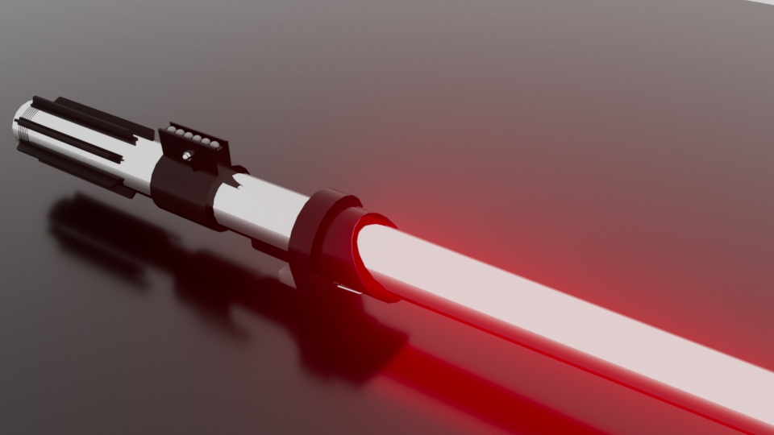

Modeling Portfolio
I have been exploring 3D modeling on my own, experimenting with Autodesk
Maya, Fusion360, and Blender. Through this process, I’ve developed a
strong understanding of both artistic and technical modeling, working
across different workflows for animation, making game assets, and hard
surface modeling. I enjoy bringing ideas to life through modeling,
refining forms, and iterating on designs to achieve both aesthetic appeal
and functional accuracy. Below, you’ll find some of my models created
using these tools.
Lego Brick




Glass bottle


Iron man helmet


Lightsaber render

